14. Walk mazes¶
In this practice we are going to program a game that consists of going through several mazes from the beginning to the end point before our character runs out of energy.
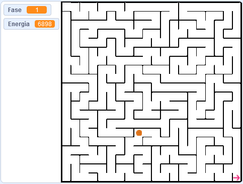{kind=link}
We start the Scratch editor.
Press the language button
 in the top bar and choose English.
in the top bar and choose English.We delete the cat object by clicking on the trash can icon.

Next we add a new character, a basketball.
Press the button choose an object
 .
.We look in the Sports section.
and select the Basketball object.

Now we will create the variable Phase that will count the number of mazes that we are going through. When this variable exceeds five mazes, the program will terminate.
Press the variables button
 ,
,click on create a variable
 .
.We change the name of the variable to Phase

Finally, click on the OK button.
We will also create the variable Energy that will count the energy we have to go through all the mazes. If the energy variable becomes empty, we will lose the game and the program will end.
Press the variables button
,click on create a variable
.We change the name of the variable to Energy
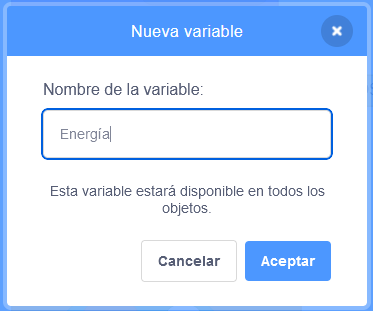Finally, click on the OK button.
We create two new blocks called move_x and move_y that will move the ball around the screen.
First click on the button my blocks 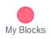
Then click on create a block 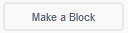
Then we change the name of the new block to move_x
First click on the button my blocks
Then we change the name of the new block to move_y
We make a program that moves the ball in all four directions, consuming energy and bouncing off the walls of the maze so that it cannot pass through.
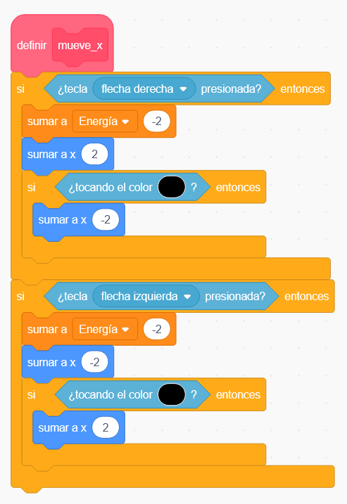 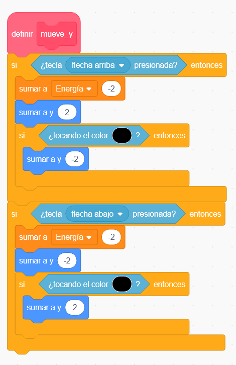The ball still won't roll because we need another routine to call the functions we've created.
Now we create a new block, Start, which will show the ball with small size at the beginning of the maze.

To continue we will program the main routine that calls all the blocks that we have previously created.
We won't be able to change the backdrop to "No_energy" yet because this backdrop hasn't been created yet. Remember to change it after creating the backdrop.
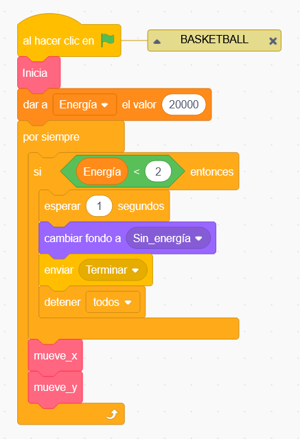To finish the ball program, we will program the behavior when it receives the Start and Finish messages.
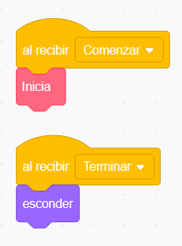Now we will switch to the Scenario and inside the backdrops tab we will create the game messages.
First we select in backdrops, paint a backdrop.
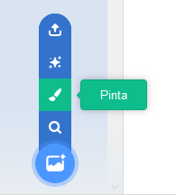Next, with the Text tool we write the following message on the screen.
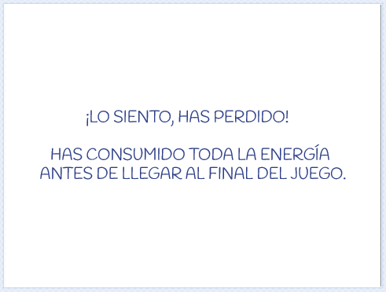Change the name of the costume to "Out_Energy".

Remember to modify the basketball program now that this backdrop is already created.
Now we will switch back to the Scenario and within the backdrops tab we will create more in-game messages.
We select in funds, paint a backdrop.
Next, with the Text tool we write the following message on the screen.
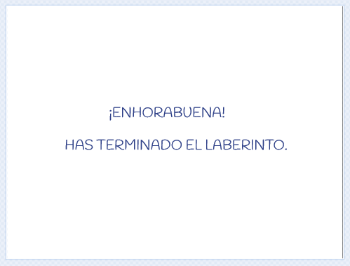Changed the name of the costume to "Finished".
We select again to paint a backdrop.
Next, with the Text tool we write the following message on the screen.
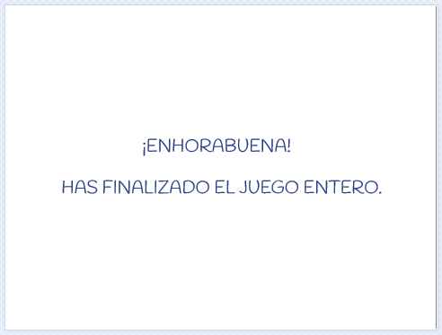Changed the name of the costume to "Finished".
To complete the backdrops, we are going to download the following compressed file that contains several mazes inside.
Labyrinths to go through. ZIP format.Once downloaded, we open the Zip file and extract all the maze files inside it to a known folder.
All files can be extracted by right-clicking on the Zip file and selecting the
Extract All...option and then clicking theExtractbutton.Back in the Scenario, within the backdrops tab, we are going to import the different mazes.
First we select in backdrops, load a backdrop.
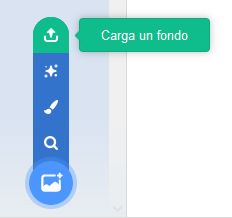We choose the folder where the previous Zip file has been downloaded and the folder where the mazes have been extracted. Ask your teacher if you don't know how to proceed in this step.
Once in the mazes folder, click on the first mazes and press the
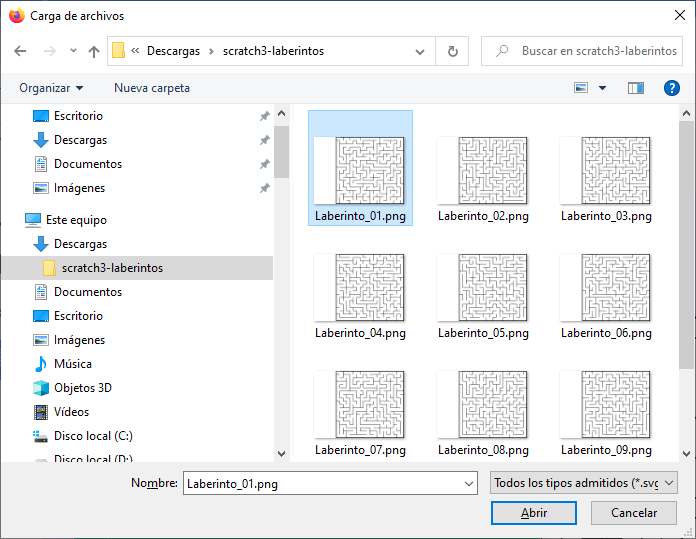Openbutton.We repeat the previous step with the first five mazes.
To continue, we are going to program the behavior of the Scenario in the Code tab.
At the start of the program we set the value of the Phase variable to 1 (the number of the maze) and display the first maze.
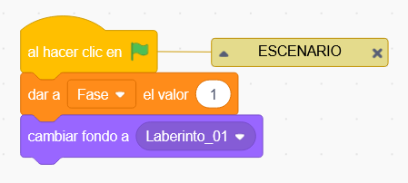Every time you get the message to Start a new maze, we add one to the Phase variable and display the corresponding maze. Once the value 6 is reached, the mazes will be over and we can end the program with a winning message.
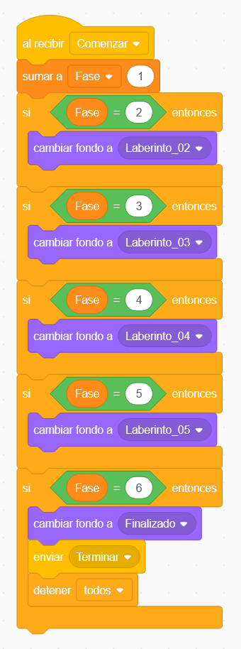At this point, it is only necessary to define when each maze ends. To achieve this we are going to add a new object, an arrow, which will send the maze finished message when it touches the basketball.
Added a new character, an arrow.
Press the button choose an object
.We look in the All section.
and select the object Arrow1.

We make a program that shows the arrow in the lower right corner at the start of the program. He must also always be detecting if he touches the basketball, to finish the maze and start a new one.
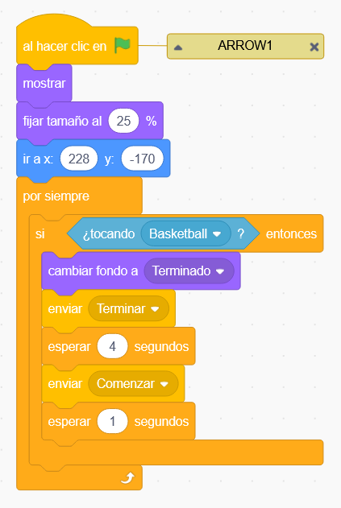In addition, we will program the arrow to hide from the end of a maze until the next maze begins.

Press the green flag
 to test the operation of the program.
to test the operation of the program.
{kind=link}
{kind=link}
{kind=link}
{kind=link}
{kind=link}
{kind=link}
{kind=link}
{kind=link}
{kind=link}
{kind=link}
{kind=link}
{kind=link}
Challenges¶
Add a light blue trail to the movement of the ball so that we know at all times what path the ball has taken.
It measures how much energy the ball consumes to go through each maze and establishes at the beginning an energy value that is just the one necessary to pass the game.
At the beginning of each maze, add small fruits scattered randomly. When the ball touches one of these fruits, the fruit must disappear and add energy to the ball.
Fruits will be added as clones of a fruit that must remain hidden.
Set the ball to a lower starting energy value, so you need to collect multiple fruits in order to finish all the mazes with enough energy.
Adjust the number of fruits and the energy each fruit adds to make the game difficult, but still finishable.